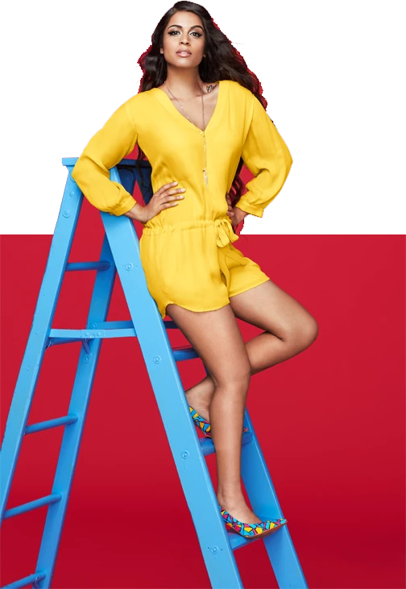
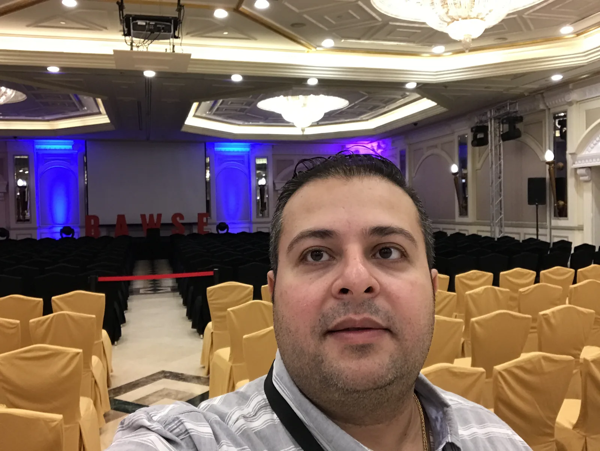
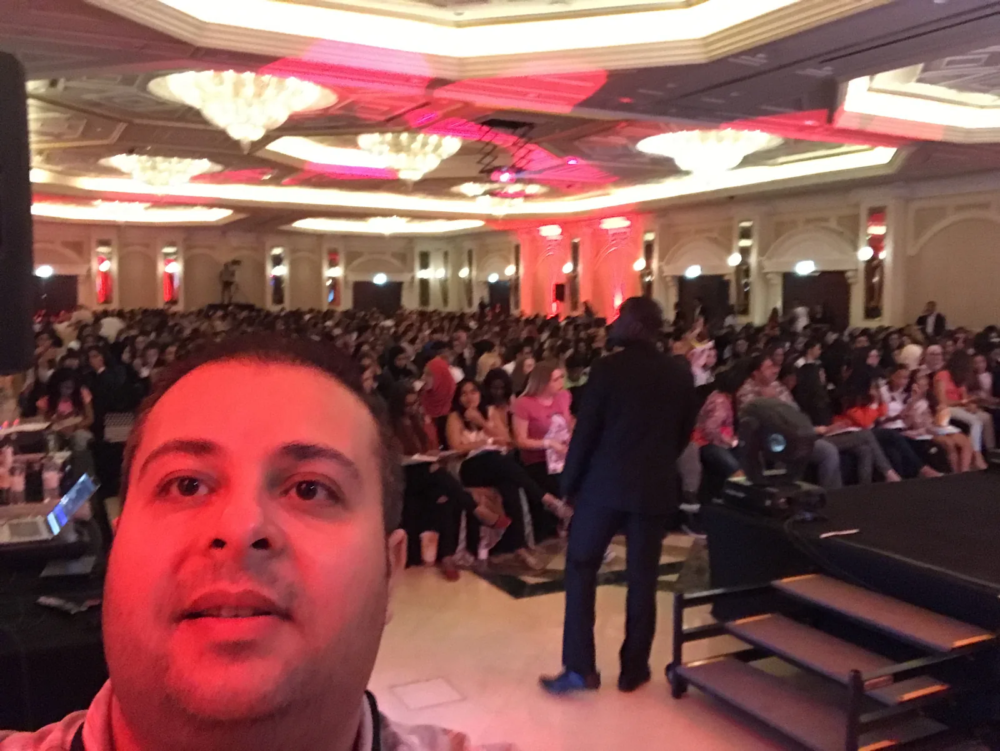

Lilly Singh Live in Dubai, How To Be A Bawse tour, Habtoor Grand Resort, JBR, 10 May 2017
The opener: her banner, built from its own layers
Her red.


Lilly Singh Live in Dubai · “How To Be A Bawse” tour · ballroom, Habtoor Grand Resort, JBR · 10 May 2017 · with MCX
Her colours, a full room.
One night of Lilly Singh’s book tour in a Dubai ballroom. Banners in her own red and yellow, approved by her agency, WME, and the room full by eight. The event was ours: owned, produced and organized with MCX, and everything managed: the sponsors, the production, the artists, the campaign, the AV.
Antoni Gerges · Partner, Creative Director & Co-producer, through AntBrush
What we delivered.
The look of the night, in her own colours, produced with MCX.
Ours: owned, produced and organized, with MCX
- Building the whole venue: the stage and the hall set-up
- The artists: booking and management
- The stage, sound, light and screens: AV production
- The set-up and the logistics
- Ticketing and sponsorship
- The running order and the night itself
Campaign
- The key visual and four social banners
- The tour name, added on WME’s notes
Listings & venue
- The Dubai Calendar (DTCM) listing
- The ticket-seller and media-partner logo strip
- Venue branding
The red look The yellow look The sign
From the job register, the artwork files and the photographs of the night.
Four banners, one voice.
Her own red and yellow, heavy hand-cut caps, the figure in front: the four banners, whole.


Show time on the clock.
The first banner set the hour: the pocket watch behind her.
Before doors.




HOW TO BE A BAWSE BOOK TOUR.
The tour’s name went onto the banners on the notes of her agency, WME, who approved every artwork.
The room, full at 8 pm.
The ballroom of the Habtoor Grand Resort, JBR, at 8:01 pm, “BAWSE” on the screen.

Partner, Creative Director & Co-producer, through AntBrush
Part of Live shows: five nights in Dubai, 2017 to 2018, with MCX.
Next projectHakawi SharqiaA Ramadan tent, built from nothing.